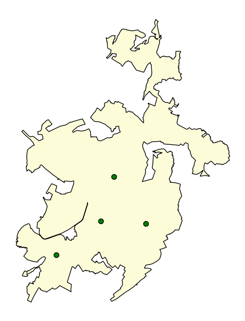
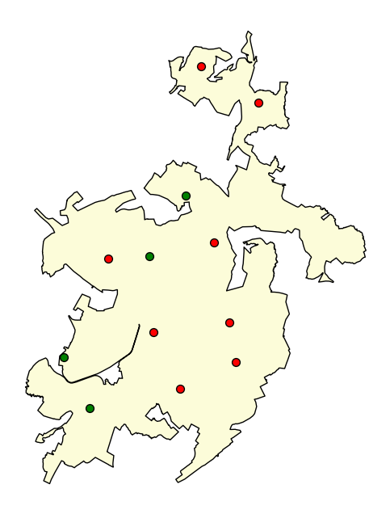

flowchart LR
classDef style_optional stroke-dasharray: 5 5
classDef style_main stroke:green, color:green
load_data("**ЗАГРУЗКА
ИСХОДНЫХ
ДАННЫХ**"):::style_main
data["Исходные
данные"]
settings["Настройки"]
action("**ПРИМЕНЕНИЕ
АЛГОРИТМА**"):::style_main
model("**ИНИЦИАЛИЗАЦИЯ
АЛГОРИТМА**"):::style_main
result["Результат"]
analyze("**АНАЛИЗ**"):::style_main
save("**СОХРАНЕНИЕ**"):::style_main
is_ok{"Результат
приемлем"}
fix("Изменение подхода"):::style_optional
load_data --> data --> action
model --> action
settings --> model
action --> result
result --> analyze
result -.-> save
analyze --> is_ok
is_ok -- ДА --> save
is_ok -. НЕТ .-> fix
10 Задача определения наилучшей дислокации множества подразделений (MCLP)
В общем виде процесс решения задачи размещения можно представить следующим образом:
Поиск наилучшей дислокации начинается с загрузки требуемых исходных данных и настройки алгоритма решения задачи размещения, затем алгоритм с использованием переданных данных решает задачу размещения, результаты анализируются и сохраняются для последующего использования или анализа средствами QGIS. Также решение о сохранении результатов может быть принято после их анализа и оценки приемлемости. Если полученные результаты по тем или иным причинам не приемлемы, расчет может быть повторен с измененными настройками, исходными данными или иным алгоритмом решения задачи BLP.
В Генезис реализованы следующие алгоритмы решения задачи MCLP:
- Рекомендуемый:
genesis.lscp.LSCP_ADDАлгоритм жадного добавления (ADD) - рекомендуемый,
- Прочие:
genesis.mclp.BestNodesKoptGМодульный алгоритм Генезис (GNS)genesis.mclp.BestNodesGAГенетический алгоритм (GA)genesis.mclp.BestNodesSAАлгоритм имитации отжига (SAA)fire_units.mclp.BestNodesGAKoptГибридный алгоритм Генетический алгоритм + Генезис (GA+GNS)
Реализован также ряд дополнительных алгоритмов описываемых в разделе Для разработчиков.
10.1 Подключение требуемых библиотек
import numpy as np
import osmnx as ox
import pandas as pd
import geopandas as gpd
import matplotlib.pyplot as plt
import genesis as genesis
# Версии библиотек
print('OSMnx:', ox.__version__,
'\nGeoPandas:', gpd.__version__,
'\nPandas:', pd.__version__,
'\ngenesis:', genesis.__version__,
)OSMnx: 2.0.1
GeoPandas: 1.0.1
Pandas: 2.2.2
genesis: 0.1.03310.2 Рекомендуемый способ: Алгоритм жадного добавления
Рекомендуемым способом является использование алгоритма жадного добавления ADD: genesis.lscp.LSCP_ADD.
Данный подход универсален и может быть применен к решению задач BLP, MCLP, LSCP.
Он основан на идее определения точки при размещении пожарного депо в которой обеспечивается заданное время прибытия к как можно большему количеству объектов защиты. При расчете используется моделирование параметров прибытия подразделений пожарной охраны с использованием матрицы прибытия genesis.states.ArrivalTimeMatrixState.
10.3 Загрузка исходных данных
from graphs.speeds import set_graph_travel_times, kmh_to_mm
from fire_units.settings import DEFAULT_SPEEDS
# 1. Загрузка исходных данных
## Загрузка ГДС
G = ox.load_graphml('data/kemerovo/gds.ml')
## Установка скоростного режима
set_graph_travel_times(
G,
speeds=DEFAULT_SPEEDS,
morph_function = kmh_to_mm)
## Упрощение графа (уменьшение количества узлов)
G = ox.simplification.simplify_graph(G)
## Загрузка границ города
borders = gpd.read_file('data/kemerovo/borders.gpkg')
## Загрузка пожарных подразделений
units = gpd.read_file('data/kemerovo/fire_units.gpkg')
### Сопоставление пожарных подразделений с ближайшими узлами ГДС
units['node'] = ox.distance.nearest_nodes(G, units.geometry.x, units.geometry.y)
### Формирование словаря подразделений для передачи алгоритму
units_dict = {k:v for k,v in zip(units['node'], units['name'])}
## Загрузка зданий
buildings = gpd.read_file('data/kemerovo/buildings.gpkg')
### Сопоставление зданий с ближайшими узлами ГДС
centroids = ox.projection.project_gdf(buildings).geometry.centroid
buildings['node'] = ox.distance.nearest_nodes(ox.project_graph(G),
centroids.x,
centroids.y
)10.4 Матрица прибытия
from genesis.states import get_atm
## Расчет матрицы прибытия
matrix = get_atm(G,
data = buildings,
data_sample_size = 2000,
cutoff = 10,
)|########################################| 100.0%10.5 Сборка и инициализация алгоритма
from genesis.lscp import LSCP_ADD
from genesis.states import FirstArrivalUnitState
from fire_units.metrics import CoverIndexBuilding
# 2. Сборка решения
## Выбор алгоритма моделирования параметров прибытия
state = FirstArrivalUnitState()
## Выбор метрики
metric = CoverIndexBuilding(buildings, ip_val=10) # Используется метрика ИП-10. Для ADD метрика выполняет роль оценки
## Функция остановки
stop_case = lambda dynamic_nodes, **kwargs: len(dynamic_nodes) >= 4 # Расчет проводится для определения оптимальной дислокации 4 подразделений
## Сборка и инициализация алгоритма ADD
add = LSCP_ADD(
state_function = state,
matrix = matrix,
metric_function = metric,
stop_case_function = stop_case,
)Расчет без учета имеющихся подразделений
Определение оптимальной дислокации 4 подразделений с целью минимизации индекса прикрытия (10 минутная зона).
# 3. Расчет BLP
best_nodes, best_metric = add(
env = G,
)
# 4. Анализ результатов
## Печать результатов
print('ИП-10:', best_metric)
## Получение набора данных узлов графа, для сопоставления с полученным лучшим узлом
g_nodes = ox.graph_to_gdfs(G, edges=False)
## Печать карты
fig, ax = plt.subplots(figsize=(8,8))
borders.plot(ax=ax, color='#fcfcd9', edgecolor='black')
g_nodes.loc[best_nodes.keys()].plot(ax=ax, facecolors='g', edgecolors='k', markersize=50)
ax.set_axis_off()
plt.show()ИП-10: 68.35429545939033
Расчет с учетом имеющихся подразделений
Определение оптимальной дислокации 4 подразделений с целью минимизации индекса прикрытия (10 минутная зона). С учетом существующих подразделений.
from genesis.lscp import LSCP_ADD
from genesis.states import FirstArrivalUnitState
from fire_units.metrics import CoverIndexBuilding
# 2. Сборка решения
## Выбор алгоритма моделирования параметров прибытия
state = FirstArrivalUnitState()
## Выбор метрики
metric = CoverIndexBuilding(buildings, ip_val=10) # Используется метрика ИП-10. Для ADD метрика выполняет роль оценки
## Функция остановки
stop_case = lambda dynamic_nodes, **kwargs: len(dynamic_nodes) >= 4 # Расчет проводится для определения оптимальной дислокации 4 подразделений
## Сборка и инициализация алгоритма ADD
add = LSCP_ADD(
state_function = state,
matrix = matrix,
metric_function = metric,
stop_case_function = stop_case,
)
# 3. Расчет BLP
best_nodes, best_metric = add(
env = G,
static_nodes = units_dict, # Размещение существующих подразделений пожарной охраны
)
# 4. Печать результатов
print('ИП-10:', best_metric)
## Получение набора данных узлов графа, для сопоставления с полученным лучшим узлом
g_nodes = ox.graph_to_gdfs(G, edges=False)
## Печать карты
fig, ax = plt.subplots(figsize=(8,8))
borders.plot(ax=ax, color='#fcfcd9', edgecolor='black')
g_nodes.loc[best_nodes.keys()].plot(ax=ax, facecolors='g', edgecolors='k', markersize=50)
g_nodes.loc[units_dict.keys()].plot(ax=ax, facecolors='r', edgecolors='k', markersize=50)
ax.set_axis_off()
plt.show()ИП-10: 92.77339586442123
Важно
Алгоритм моделирования ArrivalTimeMatrixState(matrix) используется в LSCP_ADD только в том случае, если при расчете матрицы прибытия не было указано ограничение времени прибытия cutoff.
Если же в функции get_atm было указано ограничение времени прибытия cutoff (так как в примере выше), то следует использовать алгоритм моделирования FirstArrivalUnitState()
10.6 Сохранение
# Получение набора данных узлов графа, для сопоставления с полученным лучшим узлом
g_nodes = ox.graph_to_gdfs(G, edges=False)
# Сохранение новых подразделений
## Создание нового набора данных
new_units = pd.DataFrame(best_nodes.items(), columns=['node', 'name'])
## Сопоставление с узлами ГДС
new_units = g_nodes.merge(new_units, left_index=True, right_on='node')
## Оставляем только нужные столбцы [имя, координаты, геометрия]
new_units = new_units[['name', 'x', 'y', 'geometry']]
## Сохранение в файл 'new_units.gpkg' и слой 'результат BLP'
new_units.to_file('data/kemerovo/new_units.gpkg', driver='GPKG', layer='результат MCLP')